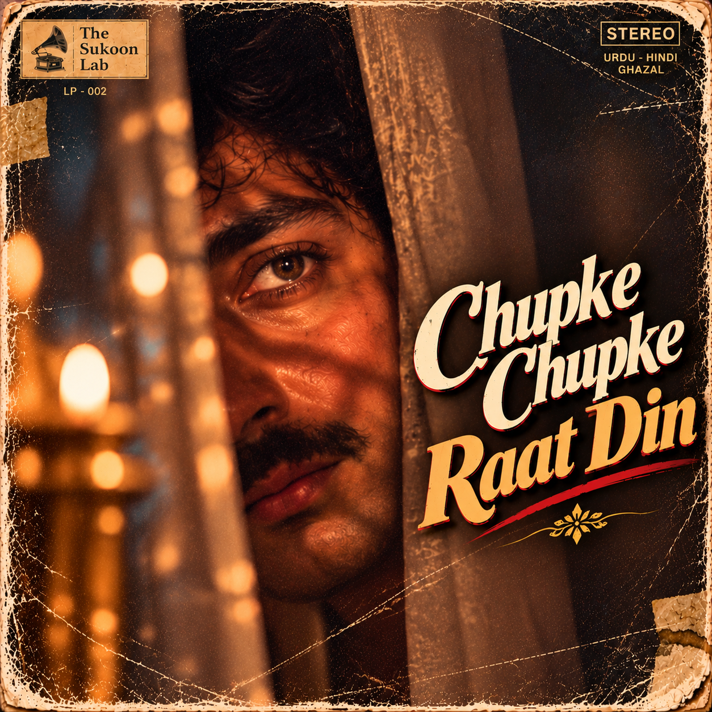

▶FEATURED SONG · 1980s BOLLYWOOD GHAZAL
Chupke Chupke Raat Din
1980s Bollywood Ghazal · Studio Cassette Master
Poet: Hasrat Mohani
A classic ghazal in its vintage Bollywood spirit, presented in The Sukoon Lab’s 1982 studio-cassette-master version.
Watch the featured version →